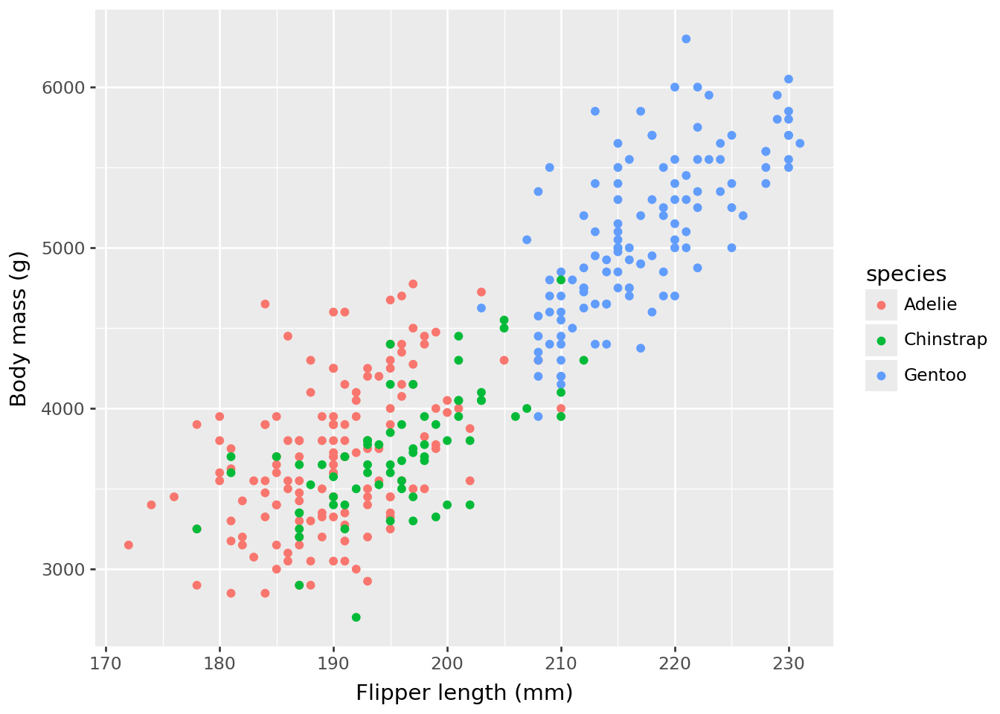
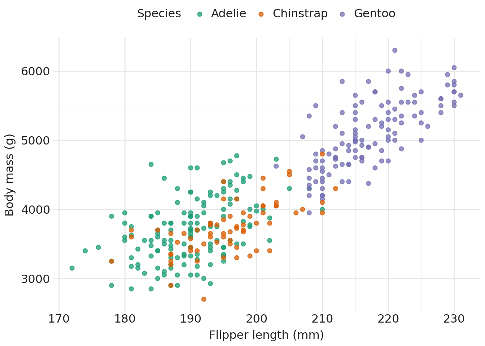

import a11yviz
import pandas as pd
from itables import show
from plotnine import aes, geom_point, ggplot, labs, theme
from plotnine.data import penguins
penguins = penguins.dropna()
dt_options = dict(
buttons=["copy", "csv", "excel", "pdf"],
pageLength=10,
scrollX=True,
autoWidth=True,
classes="compact stripe hover",
)Example
p = (
ggplot(penguins, aes("flipper_length_mm", "body_mass_g", color="species"))
+ geom_point()
+ labs(x="Flipper length (mm)", y="Body mass (g)")
)
p
Audit reveals the gaps
a11y_audit() returns one row per WCAG criterion with a status field. The table below filters to actionable rows (status = "todo" or "ok") — the items where the chart needs human attention.
| status | meaning |
|---|---|
ok |
check passes automatically |
todo |
needs user action |
applied |
handled by theme_a11y() / scale_*_a11y() / a11y_layout()
|
manual |
requires human review (e.g., reflow at 320 px) |
css |
covered by a11y_css() stylesheet |
doc |
document-level check; run a11y_check_headings() separately |
n/a |
not applicable to this chart type (e.g., hover on plotnine) |
audit_p = a11yviz.a11y_audit_chart(p)
print(a11yviz.a11y_audit_summary(audit_p))
show(pd.DataFrame(a11yviz.a11y_audit_actionable(audit_p)),
table_id="audit-example", **dt_options)2 to do, 0 ok, 4 already handled.| Loading ITables v2.7.3 from the internet... (need help?) |
Two actionable items come back as todo:
- WCAG 1.1.1: alt text missing
- WCAG 1.4.1: redundant group encoding (color only)
Accessible
p_a11y = (
ggplot(penguins, aes("flipper_length_mm", "body_mass_g", color="species"))
+ geom_point(size=2, alpha=0.75)
+ a11yviz.theme_a11y()
+ a11yviz.scale_color_a11y("dark2_8")
+ labs(x="Flipper length (mm)", y="Body mass (g)", color="Species")
+ theme(legend_position="top")
)
p_a11y = a11yviz.a11y_alt_text(
p_a11y,
"Scatter of penguin body mass vs flipper length by species; "
"Gentoo cluster at long flippers and high body mass.",
)
p_a11y
Three accessibility wins from a few extra lines: scale_color_a11y("dark2_8") swaps in WCAG-tagged colors that clear 3:1 on white (Success Criterion 1.4.11), theme_a11y() applies the recommended font sizes and axis styling (Success Criterion 1.4.4), and a11y_alt_text() attaches the screen-reader description (Success Criterion 1.1.1). Color is still the only group cue, so the audit honestly flags 1.4.1 as todo — when shape variety would hurt readability, add direct cluster labels or facet by species to clear it.
Audit again
audit_a = a11yviz.a11y_audit_chart(p_a11y)
print(a11yviz.a11y_audit_summary(audit_a))
show(pd.DataFrame(a11yviz.a11y_audit_actionable(audit_a)),
table_id="audit-accessible", **dt_options)1 to do, 0 ok, 5 already handled.| Loading ITables v2.7.3 from the internet... (need help?) |
Alt text and text-size checks come back as ok; 1.4.1 stays todo by design (see the note above).
WCAG rubric
a11y_rubric() is the per-criterion reference: name, level, threshold, and the a11yviz function that addresses each. Same criterion field as a11y_audit(), so the two join cleanly.
show(pd.DataFrame(a11yviz.a11y_rubric()), table_id="rubric", **dt_options)| Loading ITables v2.7.3 from the internet... (need help?) |
Accessible CSS
a11y_css() returns the path to a stylesheet that handles dark-mode tooltips, keyboard focus rings, table styling, and responsive layout. a11y_css("shiny") also returns the path to the Shiny add-on with skip-link, reduced-motion, and high-contrast rules.
import os
os.path.basename(str(a11yviz.a11y_css()))'a11yviz.css'Playground
a11yviz.run_app() launches a local Shiny for Python playground (mirrors the R run_app()). Two tabs compare a baseline plotnine chart against the accessible version with paired audit tables; toggle between WCAG AA and AAA in the sidebar. Requires the playground extra:
pip install "a11yviz[playground]"import a11yviz
a11yviz.run_app()See the function reference for the full API.
References
- Crameri, F., Shephard, G. E., & Heron, P. J. (2020). The misuse of colour in science communication. Nature Communications, 11, 5444.
- Nuñez, J. R., Anderton, C. R., & Renslow, R. S. (2018). Optimizing colormaps with consideration for color vision deficiency to enable accurate interpretation of scientific data. PLoS ONE, 13(7), e0199239.
-
WCAG 2.1 specification — pass any
criterionvalue toa11y_wcag_url()for the deep link. - ADA web guidance